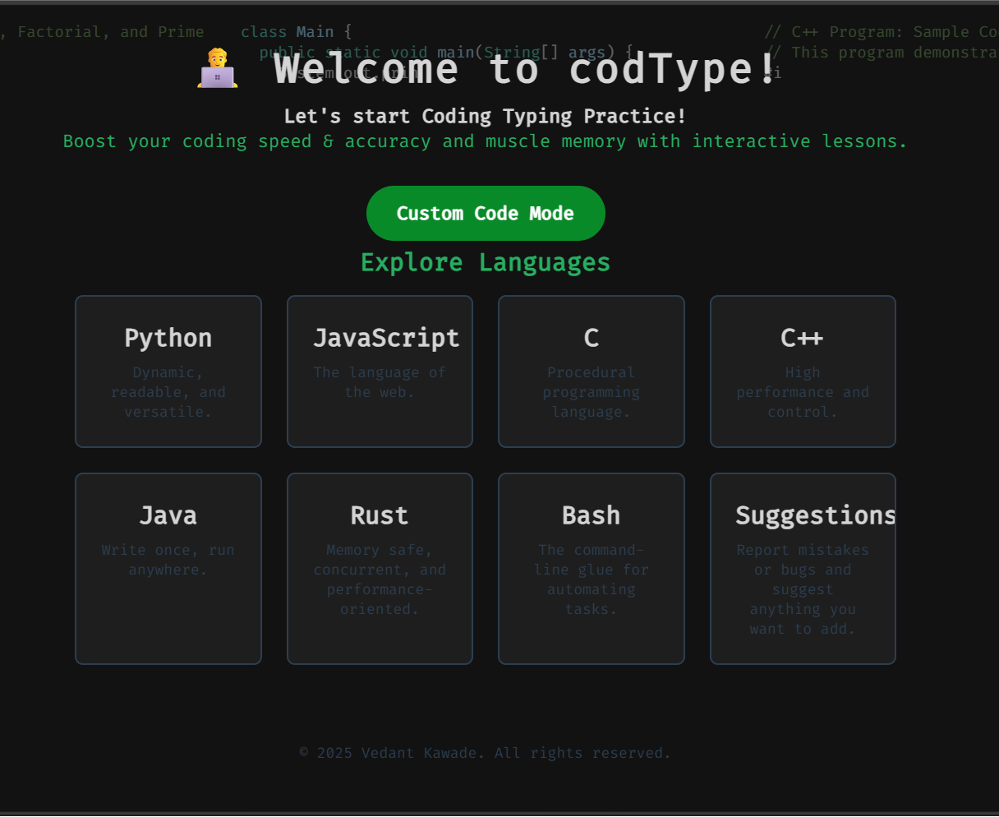
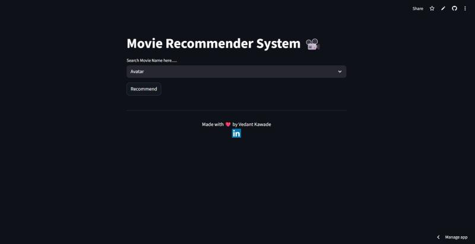
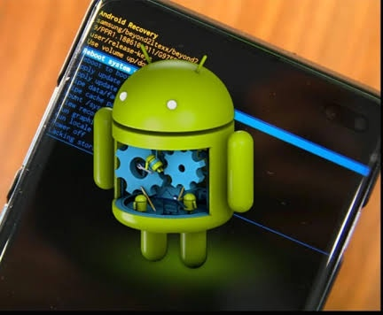
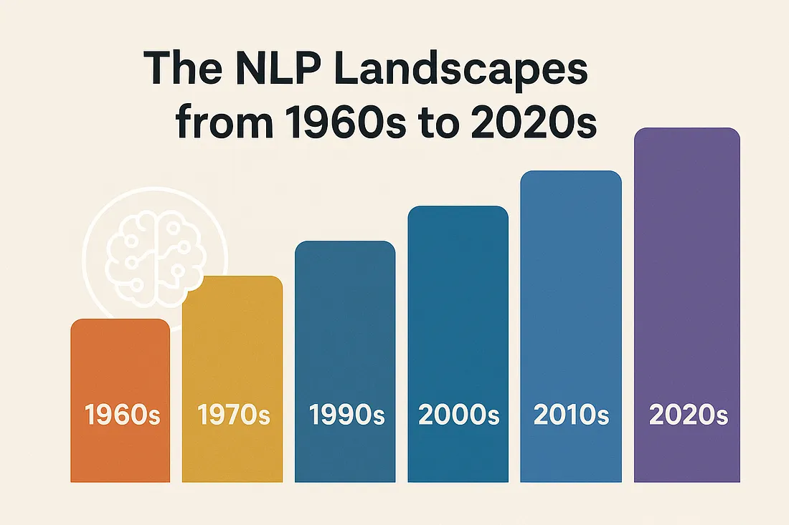

CodeType - Frontend Coding Practice
A lightweight practice website built to explore UI/UX and quick iteration ("vibe coding" exploration) with a clean interface.
I focus on applied machine learning, computer vision, and learning-based systems. I enjoy turning ideas into working prototypes and documenting what I learn.
I am an engineering student exploring AI/ML and RL through hands-on builds. I prefer learning by shipping: small products, experiments, and technical guides.
A small set of projects that demonstrate how I build, document, and ship. Each card links to a live demo or repository.

A lightweight practice website built to explore UI/UX and quick iteration ("vibe coding" exploration) with a clean interface.

A recommendation demo that suggests similar movies. Built to practice NLP-style feature extraction and user-facing ML delivery.

A step-by-step technical guide published on GitHub and shared to the community (XDA). Focused on clarity and reproducibility.
I write to clarify concepts and document progress. This is also where I share broader research summaries.

A high-level timeline of NLP milestones, from early statistical methods to modern transformer-era systems.
I keep the stack lean and practical. I focus on fundamentals, reproducible experiments, and clear demos.
I am particularly interested in reinforcement learning and agentic systems - how agents learn from interaction, how we evaluate them, and how we build reliable behavior under constraints.
RL is a practical way to study learning-by-doing. It connects perception, decision-making, and feedback loops, which makes it a strong foundation for building intelligent systems beyond static prediction.
Best way to reach me is via LinkedIn or email.
Email: vedantkawade.official@gmail.com
GitHub, LinkedIn, and X are linked below.
If you prefer a form, integrate Formspree or similar (keeps GitHub Pages simple).